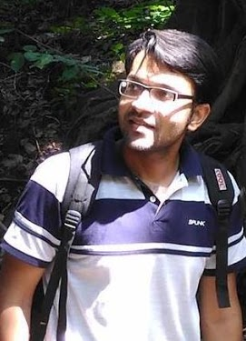

Sumukh Bansal |
I am a senior research scientist at Jio, Hyderabad, India. Before that I was a postdoc researcher at InterDigital R&I Rennes. I completed my PhD in July 2020, in the area of 3D Computer Vision and Geometry Processing under the supervision of Dr. Aditya Tatu at DA-IICT. I have a master degree in ICT with a specialization in Machine intelligence. My research interests are geometry processing, computer vision, and geometric deep learning. Research Interests: 2D/3D Computer Vision, Digital Avatars, Generative AI, Visual Langauage Models. Contact Address: AICOE, Jio Platform, Hyderabad. Email: sumukhbansal@gmail.com
|